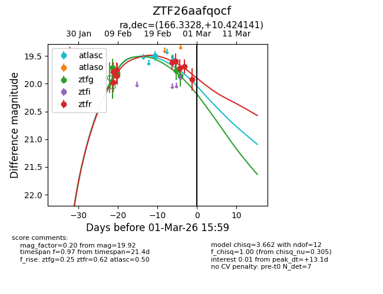
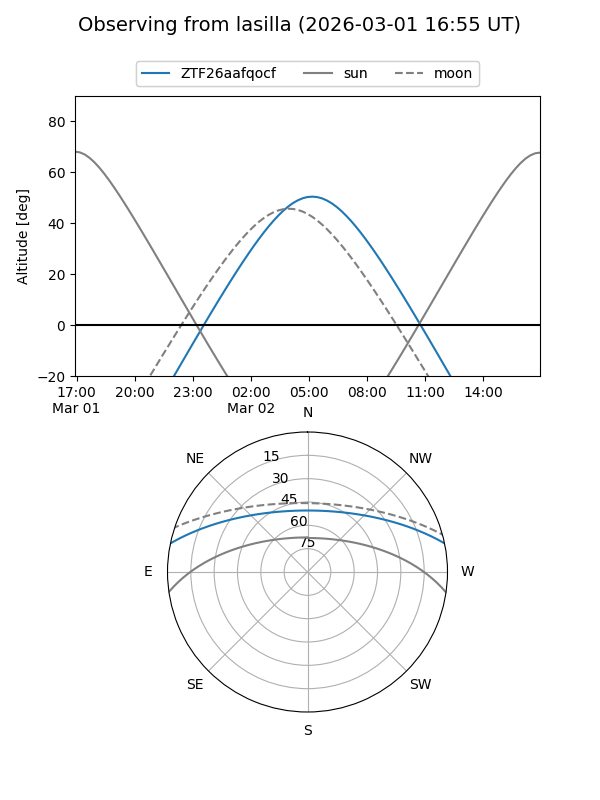
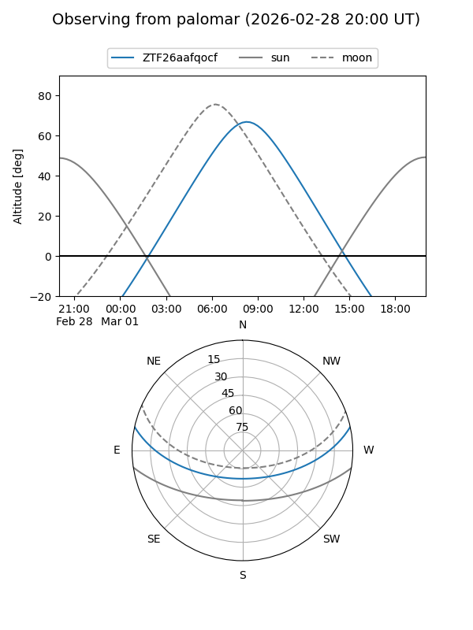
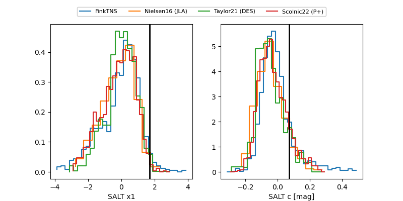

ZTF26aafqocf
Target ZTF26aafqocf at 2026-03-01 16:01
Aliases and brokers:
FINK: link
Lasair: link
ALeRCE: link
alt names
ZTF26aafqocf (ztf,fink_ztf)
Coordinates:
equatorial (ra, dec) = 166.3328,+10.42414
equatorial (HMS+DMS) = 11:05:19.88,+10:25:26.91
galactic (l, b) = (241.6059,+59.95774)
Flags:
Photometry:
last atlasc=19.50, ztfg=19.86, ztfr=19.92
1 atlasc, 5 ztfg, 9 ztfr detections
Lightcurve

Visibility


Additional plots
